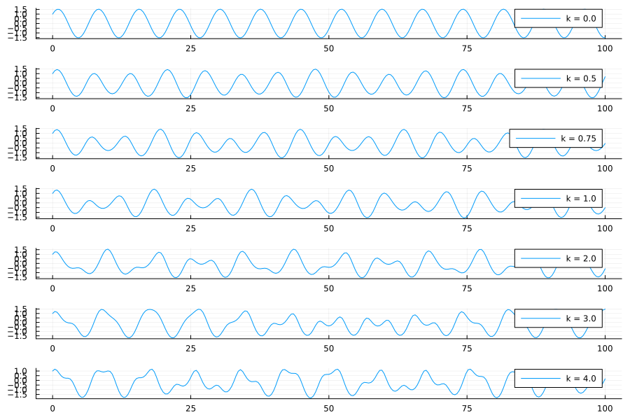

Coupled Harmonic Oscillator
This system describes two harmonic oscillators that are coupled nonlinearly.
The following shows the $q_1$ component of the system for different values of $k$:

Library functions
GeometricProblems.CoupledHarmonicOscillator — ModuleCoupledHarmonicOscillatorThe CoupledHarmonicOscillator module provides functions hodeproblem and lodeproblem each returning a Hamiltonian or Lagrangian problem, respectively, to be solved in the GeometricIntegrators.jl ecosystem. The actual code is generated with EulerLagrange.jl.
The coupled harmonic oscillator is a collection of two point masses that are connected to a fixed wall with spring constants $k_1$ and $k_2$ and are furthermore coupled nonlinearly resulting in the Hamiltonian:
\[H(q_1, q_2, p_1, p_2) = \frac{q_1^2}{2m_1} + \frac{q_2^2}{2m_2} + k_1\frac{q_1^2}{2} + k_2\frac{q_2^2}{2} + k\sigma(q_1)\frac{(q_2 - q_1)^2}{2},\]
where $\sigma(x) = 1 / (1 + e^{-x})$ is the sigmoid activation function.
System parameters:
k₁: spring constant of mass 1k₂: spring constant of mass 2m₁: mass 1m₂: mass 2k: coupling strength between the two masses.
GeometricProblems.CoupledHarmonicOscillator.hodeproblem — FunctionHamiltonian problem for coupled oscillatorConstructor with default arguments:
hodeproblem(
q₀ = [1.0, 0.0],
p₀ = [2.0, 0.0];
tspan = (0.0, 100.0),
tstep = 0.4,
parameters = (m₁ = 2.0, m₂ = 1.0, k₁ = 1.5, k₂ = 0.3, k = 1.0)
)GeometricProblems.CoupledHarmonicOscillator.lodeproblem — FunctionLagrangian problem for the coupled oscillatorConstructor with default arguments:
lodeproblem(
q₀ = [1.0, 0.0],
p₀ = [2.0, 0.0];
tspan = (0.0, 100.0),
tstep = 0.4,
parameters = (m₁ = 2.0, m₂ = 1.0, k₁ = 1.5, k₂ = 0.3, k = 1.0)
)